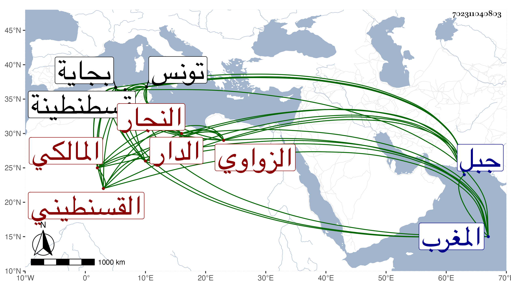

0902Sakhawi.DawLamic.ITO20230111-ara1.EIS1600.702311040803
Biography ID: 702311040803
إبراهيم بن فائد بن موسى بن عمر بن سعيد بن علال بن سعيد النبروني الزواوي النجار القسنطيني الدار المالكي . ولد سنة ست وتسعين وسبعمائة في جبل جرجرا ثم انتقل إلى بجاية فقرأ بها القرآن ظنا واشتغل بها في الفقه على أبي الحسن علي بن عثمان ثم رحل إلى تونس فأخذ الفقه أيضا وكذا المنطق عن أبي عبد الله الأبي والفقه أيضا وكذا التفسير عن القاضي أبي عبد الله القلشاني والفقه وحده عن يعقوب الزعبي والأصول عن عبد الواحد الفرياني ثم رجع إلى جبال بجاية فأخذ العربية عن الأستاذ عبد العالي بن فراج ثم انتقل إلى قسنطينة فقطنها وأخذ بها الأصلين والمنطق عن حافظ المذهب أبي زيد عبد الرحمن الملقب بالباز والمعاني والبيان عن أبي عبد الله محمد اللبسي الحكم الأندلسي ورد عليهم حاجا والأصلين والمنطق والمعاني والبيان مع الفقه وغالب العلوم المتداولة عن أبي عبد الله بن مرزوق عالم المغرب قدم عليهم قسنطينة فأقام بها نحو ثمانية أشهر ولم ينفك عن الاشتغال والأشغال حتى برع في جميع هذه الفنون لا سيما الفقه وعمل تفسيرا وشرح ألفية ابن مالك في مجلد وتلخيص المفتاح في مجلد أيضا وسماه تلخيص التلخيص ومختصر الشيخ خليل في ثلاث مجلدات سماه تسهيل السبيل في مختصر الشيخ خليل وكذا في آخر إن كان كمل في مجلدين سماه فيض النيل وحج مرارا وجاور وتلا لنافع على الزين بن عياش بل حضر مجلس ابن الجزري في سنة ثمان وعشرين وممن أخذ عنه الشهاب بن يونس بل شاركه في أخذه عن محمد بن محمد بن عيسى الدلدوي أحد مشايخه ولقيه البقاعي في سنة ثلاث وخمسين حين حج أيضا وقال أنه رجل صالح من المشهورين بين المغاربة بالدين والعلم وعليه سمت الزهاد وسكونهم وفي الظن أنني لقيته أيضا . ومات فيما قال ابن عزم في سنة سبع وخمسين رحمه الله .
